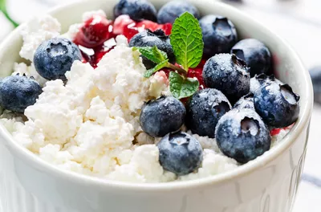
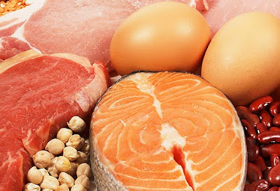

Invest in your well-being today to ensure a productive tomorrow 🌞
Here you will find information and tools to help you live a healthy and balanced life 🍎
Don't be a wellmess, but a wellness 😊
Healthy High Protein Snacks That Are Low in Calories
✅ Medically reviewed by Barbie Cervoni, MS, RD, CDCES, CDN
Eating protein-rich meals and snacks can benefit your health in many ways. Protein reduces total calorie intake, supports a healthy body weight, and improves body composition, bone health, and risk factors for heart disease. To boost your protein intake while limiting your calorie intake, include protein sources at every meal and snack and combine them with lower-calorie, high-fiber foods.
Many protein-rich products may be eaten on their own or combined with other nutritious meals to make protein-packed snacks. 2% cottage cheese, turkey sticks , trail mix, and frozen Greek yogurt bark are some nutritious, high-protein snacks with fewer than 300 calories and at least 10 grams of protein per serving.
Cottage cheese is a filling, low-calorie snack with 23.5 grams of protein per cup and a high concentration of vitamins and minerals. Turkey sticks are low in calories but high in protein, making them an excellent choice for individuals wanting to cut calories. Trail mix is a popular snack that may be produced at home or purchased ready-made. Greek yogurt may be made into high-protein snacks that can be enjoyed at any time of day.
These are just a handful of the numerous high-protein, healthful snacks available. You may increase your protein consumption while limiting your calorie intake by include protein sources at every meal and snack.
Health Benefits of Olive Oil

✅ Medically reviewed by Melissa Nieves, LND
Olive oil is a versatile fat that is created by crushing, milling, and pitting olives to obtain their oil. This nutritious oil is rich in protective compounds that positively impact health in several ways, including protecting against heart disease and type 2 diabetes. It is an important component of the Mediterranean diet, which is considered one of the healthiest eating patterns in the world.
Olive oil enhances heart health by lowering the risk of heart disease by encouraging healthy blood lipid levels, blood pressure, blood vessel function, and the prevention of atherosclerosis. Atherosclerosis is the thickening or hardening of arteries caused by plaque formation. Olive oil-rich diets have been demonstrated to protect against heart disease risk factors such as atherosclerosis.
Olive oil contains compounds, including phenolic antioxidants, that decrease the production of inflammatory molecules that promote atherosclerosis. For example, oleuropein is a phenolic compound found in olive oil that helps reduce inflammation and inhibits the expression of adhesion molecules, which play key roles in the development and progression of atherosclerosis.
According to research, diets high in olive oil may help slow the progression of atherosclerosis. Furthermore, ingesting olive oil on a daily basis may help reduce LDL cholesterol, boost levels of heart-protective HDL cholesterol, and lower blood pressure, all of which may help prevent heart disease.
Olive oil also has a lot of anti-inflammatory and antioxidant properties. These substances assist to decrease inflammation and protect cells from harm. One of the key reasons that olive oil consumption is related with lower illness risk is because it is high in these substances.
In conclusion, olive oil is a healthy fat with several health advantages. It improves heart health, decreases inflammation, and includes protective compounds that benefit health in a variety of ways. You may gain the various advantages of olive oil by include it in your diet.
6 Ways to Increase Your Protein Intake
✅ Medically reviewed by Elizabeth Barnes, RDN
Increasing your protein intake is essential for maintaining a healthy body. Protein is crucial for tissue formation and repair, immune system support, and energy production. Here are some suggestions to help you increase your protein intake:
1. Make protein-rich foods a priority in your diet: Include lean meats, poultry, fish, eggs, dairy products, legumes, and nuts in your diet. These foods have a lot of protein.
2. Start your day with protein: Include protein-rich meals like eggs, Greek yogurt, or a protein smoothie in your breakfast. This will keep you fuller for longer and provide you energy throughout the day.
3. Snack wisely: Instead of sugary or processed food, choose protein-rich choices like almonds, Greek yogurt, or protein bars. These will keep you full and help you avoid overeating.
4. Plan your meals as follows: Make your meals ahead of time and add a decent quantity of protein in each one. This will guarantee that you achieve your daily protein needs while also making better dietary choices.
5. Consider protein supplements: If you find it difficult to satisfy your protein requirements just via diet, protein supplements such as whey protein powder or protein bars might be a practical option.
6. Drink plenty of water: Water is essential for protein digestion and absorption. To support your protein consumption, drink at least 8 glasses of water every day.
Remember, before making any big dietary changes, it's crucial to speak with a medical expert or certified dietician. They may provide you individualized guidance based on your unique requirements and goals. The recommended daily protein intake varies depending on factors such as age, sex, and physical activity level. Here you can calculate the protein needed based on your weight below
Protein Calculator: Find Your Daily Protein Intake
Your result will be displayed here
Is BMI an Accurate Predictor of Health?
✅ Medically reviewed by Allison Herries, RDN
BMI is a risk-prediction tool that can help predict health risks. The four specific BMI cut-off points were developed in the 20th century by the Metropolitan Life Insurance Company, which used data to create height and weight tables. A statistical analysis helped determine the risk factors included in its insurance plans. The company found that those within their “ideal” weight for their body height and frame lived longer than those above their “ideal” weight.
These weight charts eventually transitioned to BMI because it correlates better with body fat percentage and health outcomes than ideal body weight. The Centers for Disease Control and Prevention (CDC) provides a BMI calculator and chart to see where your BMI lands within the categories. Calculate your BMI below
BMI Calculator: Find Your Body Mass Index
Your result will be displayed here
“The best way to think about BMI is as a risk-prediction tool,” says Brad Dieter, PhD, an exercise physiologist, molecular biologist, biostatistician, and senior advisory board member for the National Academy of Sports Medicine. “The higher your BMI, the more at risk you are for a poor health outcome.”
However, BMI is not a perfect predictor of health and can be impacted by conditions including pregnancy, having a lot of muscle mass, and getting older. According to research, the BMI alone may not accurately characterize metabolic health, which is related to how much body fat a person has. BMI might be a good place to start, but it's crucial to know its limits.
Does Getting Wet From Rain Make You Sick?
✅ Medically reviewed by Farah Khan, MD
It is a common misconception that getting wet in the rain can make you catch a cold. The rain itself can't actually make you sick. However, staying wet and cold for prolonged periods may cause you to lose enough body heat to negatively impact your immune system, increasing your chance of contracting the cold or flu virus..
VIRUSES ARE NOT TRANSMITTED BY RAIN. The bodily fluids of an infected individual can transmit viruses that cause the common cold and flu. You can get infected by having close contact with sick individuals, contacting a surface that has been exposed to the virus through snot or saliva, and then touching your eyes, mouth, or nose.
During the cold and wet seasons, more people get sick, although this is probably because they spend more time indoors. According to research, cold, dry environments are more likely to favor the growth of cold and flu viruses. When it rains or is humid outside, these viruses are less likely to spread. However, individuals are more prone to gather indoors on rainy days. Indirectly, wet weather may increase the likelihood that viruses may infect more people who are in close proximity.
While you can't catch a cold in the rain, you may catch a chill that lowers your body temperature and weakens your immune system. GIn cool weather, remaining and becoming wet might make it difficult to control your body's temperature. This is due to the fact that as perspiration or rain repeatedly evaporates from the skin, the body loses heat as a result. Research has found that drops in body temperature can decrease people's immune response, which helps them fight off viruses. As a result, if you feel chilly during or after being in the rain, you might be more likely to contract a virus.
Showering won't make you sick either because it's not the rainfall that causes sickness in some people. It's doubtful that taking a shower will cause your body temperature to drop sufficiently to weaken your immune system. In a temperature-controlled space, you normally dry off and put on dry clothing after taking a shower. Your body does not lose much heat as a result of trying to drain additional water from your skin even after a brief, chilly shower. Hypothermia, or unusually low body temperature, can result from being outside in cold weather, whether it's raining or not.
8 Fitness Goals, Recommended by Personal Trainers
✅ Medically reviewed by Barbie Cervoni, MS, RD, CDCES, CDN
Setting reasonable and attainable workout goals is essential for staying motivated and tracking progress. Personal trainers recommend using the SMART method to create goals that are Specific, Measurable, Attainable, Relevant, and Timely. Here are 8 fitness goals recommended by personal trainers that you may want to consider:
1. Work Out 12 Days in a Month: Building workout routines and seeing results need consistency. Schedule your exercises ahead of time, create phone reminders, and discuss your goal with a friend to keep you accountable.
2. Run Continuously for 1 Mile in 6 Weeks: This goal is ideal for anyone who hasn't exercised in a long time and wants to improve their cardiovascular health.
3. Do 15-Minute Stretches After a Workout: Stretching can aid with flexibility, muscular pain, and injury prevention.
4. Rest for 8 Full Days Monthly: It's crucial to take rest days so that your body can heal and re-build muscular tissue.
5. Increase Your Water Intake: Staying hydrated is beneficial to general health and can aid in workout performance.
6. Improve Your Sleep Quality: A good night's sleep is essential for muscle healing, hormone control, and general wellness.
7. Try a New Workout Class or Activity: Trying new things may keep your exercises interesting and challenging.
8. Walk or Bike to Work at Least Once a Week: Physical activities can help you enhance your overall fitness by including it into your everyday routine.
Perfectionism and Anxiety: The Problem With Trying to Be Perfect
✅ Medically reviewed by Michael MacIntyre, MD
The pursuit of flawlessness, or perfectionism, may be harmful to both your physical and emotional health. According to research, perfectionism may make people more stressed out, anxious, depressed, and even suffer from medical diseases.
The constant pursuit of perfection can lead to chronic stress, as individuals set unrealistic standards for themselves and fear failure or criticism. This heightened stress can have negative consequences on both mental and physical well-being, impacting sleep quality, immune function, and overall health.
Perfectionism is also closely linked to anxiety disorders, with perfectionistic tendencies often exacerbating anxiety symptoms. The fear of making mistakes or falling short of expectations can create a constant state of worry and unease.
Depression is another potential outcome of perfectionism. Impossibly high expectations can put pressure on people to feel inadequate and critical of themselves, which can increase or cause the onset of depression symptoms.
Moreover, perfectionism can manifest in physical health issues such as chronic headaches, digestive problems, and even cardiovascular conditions. The body might suffer as a result of ongoing stress and strain, which can result in a number of health issues.
For wellbeing to endure, perfectionism's detrimental effects must be understood. To escape the cycle of perfectionism and put your emotional and physical health first, you must own your shortcomings, establish reasonable objectives, and practice self-compassion.
Managing Anxiety With the "Rule of Three"
✅ By Medically reviewed by Michael MacIntyre, MD
A therapist advised using the Rule of Three as an anxiety management technique. It involves limiting the amount of time you spend worrying to three things at once. You picture a tree with three branches, each one holding worry. No further worries are permitted to into your mind after the tree is completely full. This tactic may seem easy, yet it may be really effective in eradicating anxious thoughts. By reducing the number of things you worry about, you can focus your attention on identifying solutions and taking action, rather than being paralyzed by fear.
Letting Go: Writing Away Worries
Write your 3 worries in 3 leaves below. Once your tree is full, you are not allowed to have anymore worries.
Bonus: Calm Your Anxiety With Scenic Sounds
Relax, sit back, and immerse yourself in a world of tranquil sounds by selecting one to play:
Decrease or increase the volume (Use headphones at a moderate volume level for maximum relaxation):
Can Coffee Make You Anxious?

✅ Medically reviewed by Allison Herries, RDN
Caffeine can increase anxiety in some people. Caffeine is a powerful stimulant that can speed up bodily functions and mimic the sensations of anxiety. This can make it difficult for the mind to distinguish between the effects of caffeine and actual anxiety. Anxiety brought on by coffee is frequently accompanied by symptoms including restlessness, jitteriness, headaches, sweating, and sleeplessness. For those who are sensitive to caffeine, consuming more than 400 mg of it daily (about four to five cups of coffee) may make anxiety and panic episodes more likely.
Due to hereditary variables, everyone's response to caffeine varies. Some individuals may be more susceptible to its effects and metabolize it more slowly, resulting in it being in the body for a longer period of time. For people who are prone to anxiety, regularly using caffeine can lead to a vicious cycle in which they drink coffee to battle the low energy brought on by caffeine-induced sleeplessness but end up feeling even more anxious as a result.
If you're concerned that caffeine may be playing a role in your anxiety, you can try keeping a journal to track your caffeine intake and its effects on your mood. This might assist you in figuring out whether there is a link between your coffee intake and your anxiety levels.